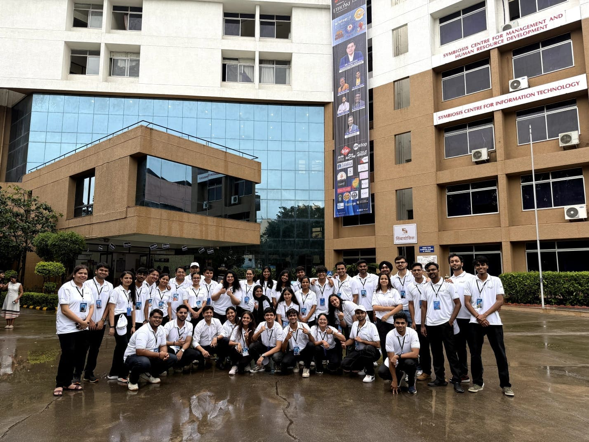
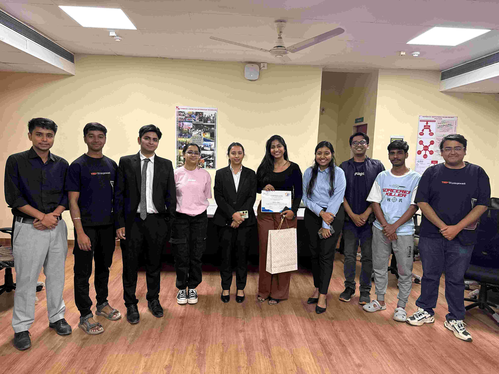
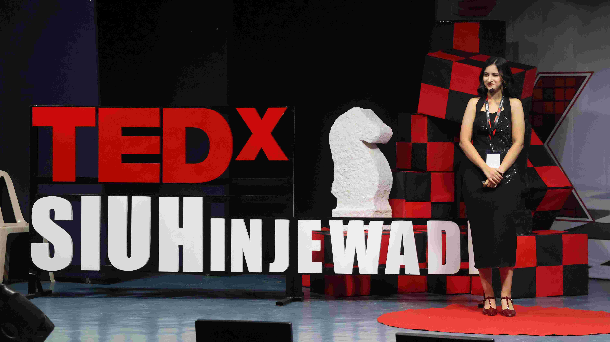
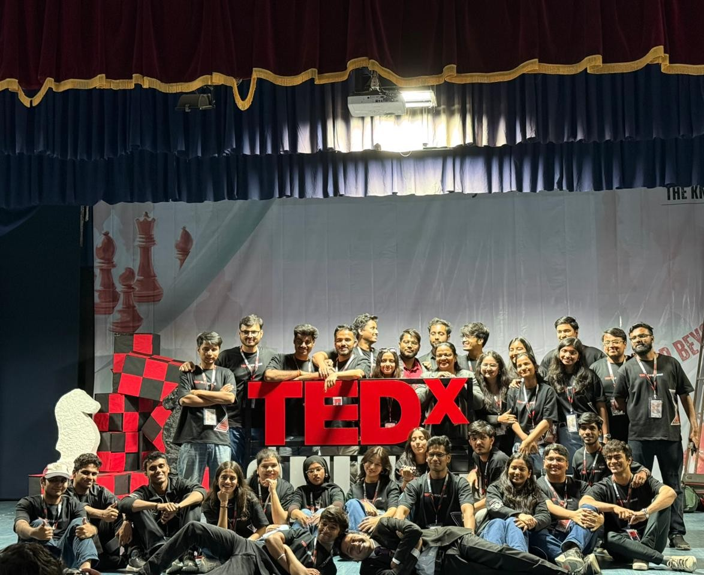

Imagine
Start with a problem worth solving and the nerve to frame it differently.
SCIT's - Information Technology entrepreneurship and leadership forum
There is always a moment before something remarkable exists — when it's nothing more than a wild question, a rough sketch, or an idea nobody quite understands yet. That's the moment we live for. The rest? We make inevitable.
what if
we actually
did this?
okay.
hear me
out.
this is
getting a little
too real.
wait—
people are
actually coming.
look at that.
we made
it happen.
Ideas do not grow in isolation.
Entrepreneurship begins long before a company does. It begins with curiosity — the courage to question what exists and the drive to imagine what could. At iTELF, we bring together ideas, people and perspectives through experiences that inspire conversations, challenge thinking and encourage students to create something of their own.
Where ideas are tested in the real world
SCIT's flagship entrepreneurship platform, hosted by iTELF, brings student teams into rooms with founders, investors, mentors and problems that demand more than a classroom answer.
Explore SPROUT'IT →Start with a problem worth solving and the nerve to frame it differently.
Pressure-test the idea with business thinking, models and market logic.
The headline pitch arena where innovative ideas meet investors and real feedback.
Move from a promising concept to a proposition people can actually believe in.
Ideas, voices and perspectives
Not every lesson comes from a slide deck. STREAMS creates direct conversations with founders, leaders, creators and industry voices so students can hear how decisions are actually made when the stakes are real.
Ideas worth spreading at SCIT
iTELF contributes to the wider culture of ideas through TEDxSIUHinjewadi — a platform built around speakers, stories and experiences that challenge how an audience sees the world.
A visual archive of the work




Where you can make the work happen
Build client relationships, sharpen persuasion and negotiation, and represent the committee in conversations that happen beyond campus.
Turn concepts into visual experiences through design, storytelling, content and the details that make an event recognisable.
Find the right audience, shape the message and build momentum around everything the ecosystem creates.
Coordinate people, timelines and moving parts to transform a plan into an experience that works in the real world.